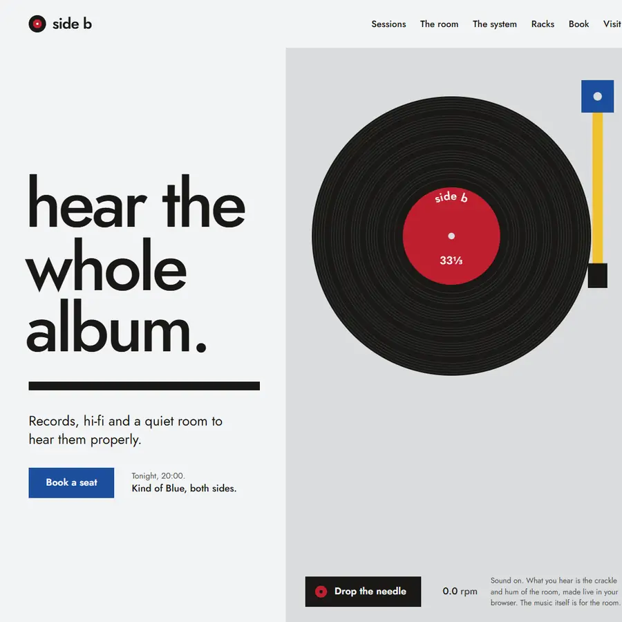
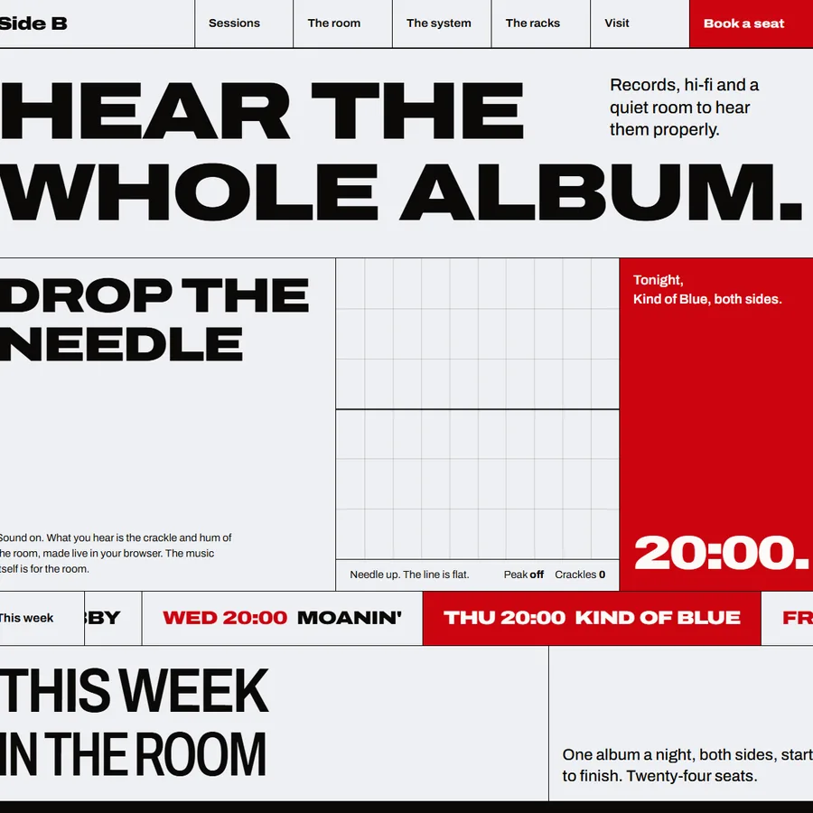
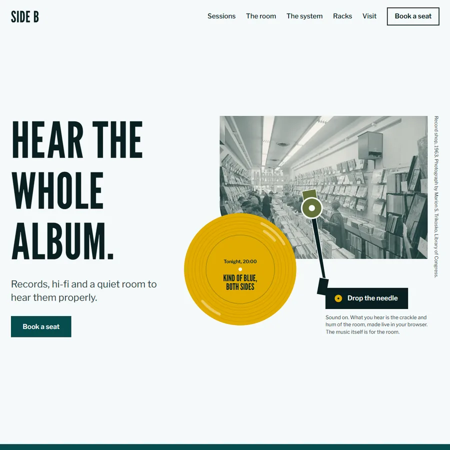
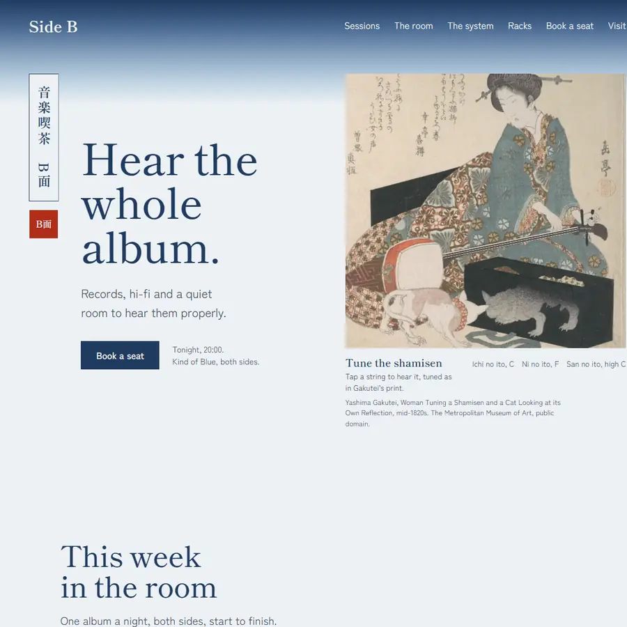
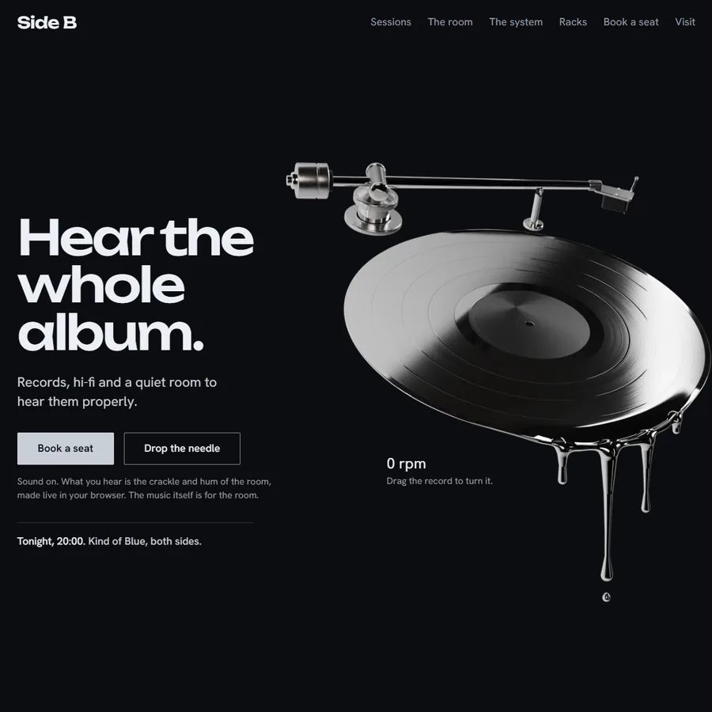

One shop, five ways to hear it.
Side B is a made-up record shop with a listening room, after the jazz cafés of Tokyo. The words and the facts never change. The type, colour, layout, pictures, motion and sound are rebuilt for each style.
Flick through the crate, then open a sleeve.
-

1 Bauhaus The record as a circle, a tonearm as a line, Bayer's lowercase. -

2 Brutalist The grid as hairlines, variable type at full stretch, the sound drawn live. -

3 Mid-century A title sequence in cut paper around a photograph from 1963. -

4 Ukiyo-e A handscroll of Edo prints, and a shamisen you can tune. -

5 Liquid chrome One record rendered in Blender, yours to spin.
How it was made
- ResearchEach style from its own sources: the Bauhaus school, industrial brutalism, 1960s sleeves and title design, Edo woodblock prints, Y2K chrome.
- MaterialReal pictures only. A 1963 photograph from the Library of Congress, Edo prints from the Metropolitan Museum of Art, a record modelled and rendered in Blender.
- SoundThe crackle, the hum and the shamisen are synthesised live in the browser, so there is no recording to license.
- BuildVite and TypeScript, GSAP for the scroll choreography, View Transitions between styles. Tested at phone and desktop sizes, with motion off and with scripts off.